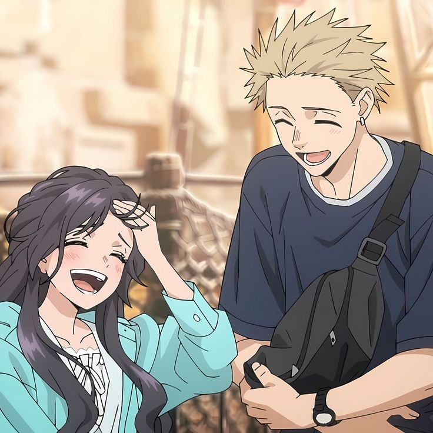

Primero fue tu compañía
Empecé a darme cuenta de que hablar contigo me cambiaba el ánimo. No tenía que pasar algo enorme; a veces bastaba con escucharte, leer algo tuyo o compartir un rato para que el día se sintiera más ligero.
Me gusta esa forma tan tuya de estar. Esa manera en la que, sin hacer demasiado ruido, terminas volviéndote una parte bonita de mis pensamientos.
Hay personas que no solo llegan: se sienten como un lugar seguro.